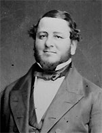

|

|

|
|
|
Born in St. Croix in the West Indies, Judah Philip Benjamin
became a prominent New Orleans attorney, the only Jewish
cabinet member in the Confederate government, and a
distinguished member of the British bar. Benjamin's parents
were Philip Benjamin, a small-scale merchant, and Rebecca de
Mendes. Leaving St. Croix while Judah was very young, the
Benjamins relocated to Charleston, South Carolina. Benjamin
grew up there, before going to Connecticut to attend Yale
University in 1825. After two years, Benjamin left Yale and
relocated to New Orleans, where he held various positions to
support his study of law. Admitted to the bar in 1833,
Benjamin married Marie St. Martin, a Catholic. Judah and
Marie had one daughter, but their marriage was not a
success. Marie moved to Paris in 1845, and Benjamin saw her
rarely thereafter.
While a New Orleans attorney, Benjamin argued two Supreme
Court cases, and co-published a learned legal treatise.
Benjamin was fairly successful in New Orleans, but never
earned enough money to enable him to live as a rich man.
Instead, the law provided him an opportunity to enter into
politics. First winning a state representative seat in 1842,
Benjamin went on to be elected to the United States Senate
in 1852 and re-elected in 1859. Initially a Whig, Benjamin
became a Democrat in the 1850's.
When Louisiana seceded from the Union, Benjamin resigned
his Senate seat and returned to the South. Although his
relationship with Jefferson Davis had not been cordial in
Washington, the new president of the Confederacy asked
Benjamin to assume the Attorney Generalship of the
Confederacy. Over time, Benjamin and Davis built a strong
working and personal relationship, overcoming their previous
differences. As Attorney General, Benjamin founded the
Confederate Justice Department, which was responsible for a
variety of legal affairs.
When the Secretary of War resigned in 1861, Benjamin's
efficiency as Attorney General led Davis to appoint Benjamin
to the vacant post. He ultimately proved to be unsuited to
the job. He clashed with Confederate generals, who disdained
his lack of military experience. The greatest failure of his
tenure was the loss of Roanoke Island in early 1862, for
which he was widely blamed. With Benjamin's popularity
plummeting and conflict between commanders in the field and
the War Department constant, a change was necessary. Davis
appointed Benjamin Secretary of State, which was a job much
better suited both to Benjamin's talents and to his
relationship with Davis. The State Department allowed
Benjamin to apply his interest in efficiency and
organization to a variety of civil issues, including foreign
relations. Although Benjamin was not able to convince France
or England to recognize the Confederacy, he did arrange the
Erlanger loan in 1863. The loan, which was coordinated by a
Parisian bank, provided nearly $10 million for the
Confederate war effort.
By 1865, Benjamin was searching for ideas to help avert
disaster for the Confederacy. He proposed that Davis offer
emancipation of slaves in exchange for recognition from
France and England, but that proposal failed. Recognizing
the seriously depleted state of Confederate military units,
he continued to suggest that slaves be freed to fight for
the South. This outraged many Confederate politicians, who
tried to remove him from office. In the end, Benjamin was
unable to find any way to help avert defeat, and he
evacuated Richmond with Davis in April of 1865. Separated
from Davis near Savannah, Benjamin narrowly missed capture
by Union troops. Instead, he was able to leave the country
through Florida and the Caribbean, eventually settling in
England.
Benjamin remained in England until his death, working as
a barrister. He earned a distinguished reputation in English
legal circles, and was appointed Queen's Counsel in 1870.
Between 1880 and 1882, Benjamin suffered several blows to
his health which led to his death in Paris in 1884.
Although Benjamin was not a fire-eater, his commitment to
the Confederacy led him to make enormous commitments of time
and energy to its cause. Nevertheless, a variety of factors,
including anti-Semitism, led to almost constant criticism of
his actions by Confederate leaders and newspapers. He was
simultaneously one of the Confederacy's best assets and one
of its least appreciated ones.
Source: Joan Waugh, ed., Facts on File Encyclopedia of American
History: Civil War and Reconstruction, 1856 to 1869 (New York: Facts on
File, 2003), 27-28.
|